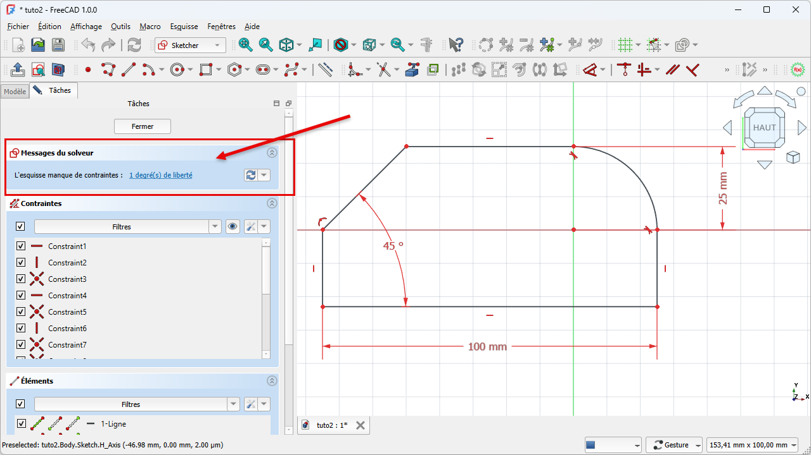
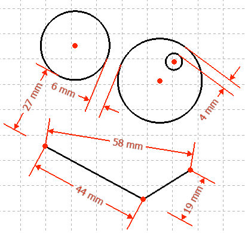
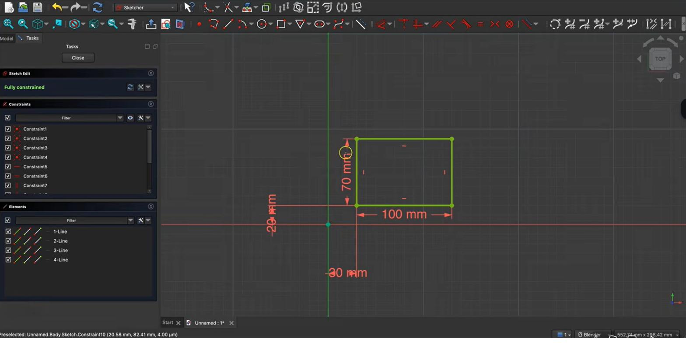

Volledig bepaalde schetsCroquis entièrement contraintFully constrained sketch
In H04 tekenden we een rechthoek die nog kon verschuiven. Nu leggen we hem helemaal vast met constraints, tot er geen enkele bewegingsvrijheid meer overblijft. Een volledig bepaalde schets kleurt groen — en dat groen is je garantie dat het model later netjes en voorspelbaar wijzigt.En H04, le rectangle pouvait encore bouger. Nous le fixons maintenant entièrement avec des contraintes, jusqu'à supprimer toute liberté. Un croquis entièrement contraint devient vert — gage d'un modèle propre et modifiable.In H04 our rectangle could still move. Now we lock it fully with constraints, until no freedom remains. A fully constrained sketch turns green — your guarantee the model edits cleanly and predictably later.
- uitleggen wat vrijheidsgraden zijn en de solver-melding lezenexpliquer les degrés de liberté et lire le message du solveurexplain degrees of freedom and read the solver message
- geometrische en dimensionale constraints toepassenappliquer des contraintes géométriques et dimensionnellesapply geometric and dimensional constraints
- een schets volledig bepalen (groen) en aan de oorsprong verankerencontraindre entièrement (vert) et ancrer à l'originefully constrain (green) and anchor to the origin
- redundante en overbepaalde constraints herkennen en oplossenreconnaître et corriger les contraintes redondantes/surcontraintesspot and fix redundant/over-constrained sketches
Workbench: de Sketcher. Het Taken-paneel toont Berichten van de solver + het aantal vrijheidsgraden.Atelier : Sketcher. Les Tâches affichent les messages du solveur + les ddl.Workbench: the Sketcher. The Tasks panel shows solver messages + the DOF count.
Commando: de Constraints-werkbalk bovenaan, of menu Schets → Schetsbeperkingen.Commande : barre de contraintes, ou Esquisse → Contraintes.Command: the constraints toolbar, or Sketch → Sketcher constraints.
- Hoekpunt + oorsprong → samenvallend.Coin + origine → coïncidence.Corner + origin → coincident.
- Onderzijde → horizontale afstand → 80 → OK.Côté bas → distance horizontale → 80.Bottom → horizontal distance → 80.
- Linkerzijde → verticale afstand → 50 → OK.Côté gauche → distance verticale → 50.Left → vertical distance → 50.
- Solver = 0 → schets groen.Solveur = 0 → vert.Solver = 0 → green.
01Vrijheidsgraden: hoeveel kan de vorm nog bewegen?Degrés de libertéDegrees of freedom
Een vrijheidsgraad is een manier waarop je schets nog kan veranderen: een punt dat nog kan schuiven, een lijn die nog kan draaien of langer worden. FreeCAD telt die voor je. In het takenpaneel (Tâches) toont de solver hoeveel vrijheidsgraden er nog zijn, bijvoorbeeld "1 vrijheidsgraad". Je doel is simpel: dat getal naar 0 brengen. Dan is de schets volledig bepaald en kleurt ze groen.Un degré de liberté est une façon dont le croquis peut encore changer : un point qui glisse, une ligne qui tourne ou s'allonge. FreeCAD les compte. Le solveur indique combien il en reste, p. ex. « 1 degré de liberté ». Objectif : arriver à 0 → croquis entièrement contraint, en vert.A degree of freedom is a way the sketch can still change: a point that slides, a line that rotates or stretches. FreeCAD counts them. The solver shows how many remain, e.g. "1 degree of freedom". Your goal: reach 0 → fully constrained, shown green.

02Twee families constraintsDeux familles de contraintesTwo families of constraints
Er zijn twee soorten. Geometrische constraints leggen relaties vast zonder getal: horizontaal, verticaal, parallel, loodrecht, gelijk (twee elementen even groot), raaklijn, symmetrie, samenvallend (coïncident), en blokkering. Dimensionale constraints geven een echte maat: lengte, horizontale of verticale afstand, straal/diameter, hoek. Samen brengen ze je vrijheidsgraden naar nul.Deux types. Les contraintes géométriques (sans valeur) : horizontale, verticale, parallèle, perpendiculaire, égalité, tangence, symétrie, coïncidence, blocage. Les contraintes dimensionnelles (avec valeur) : longueur, distance horizontale/verticale, rayon/diamètre, angle. Ensemble, elles annulent les degrés de liberté.Two kinds. Geometric constraints (no number): horizontal, vertical, parallel, perpendicular, equal, tangent, symmetric, coincident, block. Dimensional constraints (a value): length, horizontal/vertical distance, radius/diameter, angle. Together they drive the degrees of freedom to zero.

03De rechthoek volledig bepalenContraindre entièrement le rectangleFully constraining the rectangle
Goed nieuws: terwijl je tekent, voegt FreeCAD al automatisch enkele constraints toe (bv. horizontaal/verticaal voor de zijden van een rechthoek). Je hoeft dus enkel het ontbrekende toe te voegen. Voor onze bodemplaat doen we twee dingen: we verankeren de rechthoek aan de oorsprong, en we geven hem zijn maten.Bonne nouvelle : en dessinant, FreeCAD ajoute déjà des contraintes automatiques (horizontale/verticale pour un rectangle). Il reste à compléter. Pour le fond : ancrer à l'origine et donner les cotes.Good news: while drawing, FreeCAD already adds some constraints automatically (horizontal/vertical for a rectangle's sides). You only add what's missing. For our bottom plate: anchor to the origin and give it dimensions.
- 1Klik een hoekpunt van de rechthoek en de oorsprong aan, en geef ze een samenvallende constraint.Waarom: zo "zweeft" je schets niet meer; ze ligt vast t.o.v. het nulpunt — belangrijk voor latere maten.Sélectionnez un coin et l'origine, ajoutez une contrainte de coïncidence.Pourquoi : le croquis ne « flotte » plus.Select a corner and the origin, add a coincident constraint.Why: the sketch no longer "floats"; it's fixed to zero.
- 2Selecteer de onderste zijde en geef een horizontale afstand (bv. 80 mm).Waarom: dit legt de breedte vast — één vrijheidsgraad minder.Sélectionnez le côté bas, ajoutez une distance horizontale (p. ex. 80 mm).Pourquoi : fixe la largeur.Select the bottom side, add a horizontal distance (e.g. 80 mm).Why: fixes the width.
- 3Selecteer de linkerzijde en geef een verticale afstand (bv. 50 mm).Waarom: dit legt de diepte vast. De schets zou nu groen moeten kleuren.Côté gauche → distance verticale (p. ex. 50 mm).Pourquoi : fixe la profondeur. Le croquis devient vert.Left side → vertical distance (e.g. 50 mm).Why: fixes the depth. The sketch should turn green.
- 4Controleer de solver: 0 vrijheidsgraden = volledig bepaald.Waarom: groen + 0 ddl betekent dat elke maat muurvast ligt en je later veilig kunt wijzigen.Vérifiez : 0 degré de liberté.Pourquoi : vert + 0 ddl = tout est fixé.Check the solver: 0 degrees of freedom.Why: green + 0 DOF means every dimension is locked.
Groen = volledig bepaald = robuust. Werk nooit verder op een nog blauwe/witte ("onderbepaalde", d.w.z. nog niet vastgelegde) schets als basis voor een belangrijk onderdeel: bij latere wijzigingen kan ze onvoorspelbaar verschuiven.Vert = entièrement contraint = robuste. Ne bâtissez pas sur un croquis sous-contraint.Green = fully constrained = robust. Don't build important parts on an under-constrained sketch.

04Automatische en redundante constraintsContraintes automatiques et redondantesAutomatic and redundant constraints
FreeCAD voegt tijdens het tekenen automatisch constraints toe waar het er een herkent (bv. een punt dat op een lijn valt). Handig, maar soms geeft de solver een waarschuwing voor redundante constraints: een regel die al door andere wordt afgedwongen. Twee constraints die hetzelfde zeggen of elkaar tegenspreken maken de schets overbepaald. De oplossing is eenvoudig: verwijder de overbodige constraint die de solver aanwijst.FreeCAD ajoute des contraintes automatiques en dessinant. Parfois le solveur signale des contraintes redondantes : une règle déjà imposée. Deux contraintes identiques ou contradictoires rendent le croquis surcontraint. Solution : supprimer celle indiquée par le solveur.FreeCAD adds automatic constraints as you draw. Sometimes the solver warns about redundant constraints: a rule already enforced by others. Two constraints saying the same thing — or contradicting — make the sketch over-constrained. Fix: delete the surplus one the solver points out.
Krijg je een melding "overbepaald" (d.w.z. te veel vastgelegd) of "redundante constraints"? Voeg dan niet zomaar nóg een maat toe. Lees de solver-boodschap en verwijder de aangewezen constraint.Message « surcontraint » ou « redondant » ? N'ajoutez pas une cote de plus : lisez le solveur et supprimez la contrainte indiquée.Seeing "over-constrained" or "redundant"? Don't add yet another dimension: read the solver and remove the flagged constraint.
Een groene basisplaat met nette maten is precies wat je nodig hebt: in H06 trekken we deze 80 × 50 mm omhoog tot een bak, en omdat de schets bepaald is, kun je die maten later in één klik aanpassen aan een andere printplaat.Une base verte aux cotes nettes est idéale : en H06 on l'extrude en boîte, et les cotes restent modifiables en un clic.A green base with clean dimensions is exactly right: in H06 we extrude this 80 × 50 mm into a box, and the dimensions stay one-click editable for another PCB.
Sneller bepalen met sneltoetsen: D = maat, C = samenvallend, H / V = horizontaal/verticaal. Zweef boven een knop om de toets te zien. Volledige lijst: sneltoetsen-spiekfiche.Plus vite : D cote, C coïncidence, H / V horizontale/verticale. Liste : aide-mémoire.Faster constraining: D dimension, C coincident, H / V horizontal/vertical. Full list: cheat sheet.
Neem je rechthoek uit H04. Veranker een hoekpunt aan de oorsprong en geef een horizontale (80 mm) en verticale (50 mm) maat (of jouw PCB-maten). Controleer dat de solver 0 vrijheidsgraden meldt en de schets groen is. Sleep eens aan een lijn: als alles vast zit, beweegt er niets meer.Reprenez le rectangle (H04). Ancrez un coin à l'origine, donnez 80 mm (horizontal) et 50 mm (vertical). Vérifiez 0 ddl et le vert.Take your H04 rectangle. Anchor a corner to the origin, add 80 mm (horizontal) and 50 mm (vertical). Confirm 0 DOF and green. Try dragging a line: nothing should move.
05Veelgemaakte foutenErreurs fréquentesCommon mistakes
- Onderbepaald laten. Nog vrijheidsgraden over (niet groen)? Dan kan de vorm later verschuiven. Vul aan tot 0.Laisser sous-contraint. Encore des ddl ? Complétez jusqu'à 0.Leaving it under-constrained. DOF left (not green)? It can shift later. Add until 0.
- Niet aan de oorsprong verankerd. De schets "zweeft" en kan in zijn geheel verschuiven. Maak één punt samenvallend met de oorsprong.Pas ancré à l'origine. Le croquis « flotte ». Coïncidence d'un point avec l'origine.Not anchored to the origin. The sketch "floats". Make one point coincident with the origin.
- Overbepalen. Te veel maten geeft een conflict. Verwijder de redundante constraint die de solver aanwijst.Surcontraindre. Trop de cotes = conflit. Supprimez la contrainte redondante.Over-constraining. Too many dimensions clash. Delete the redundant constraint.
Handige test: pak een lijn of punt vast en versleep het voorzichtig met de muis. Beweegt er nog iets, dan is je schets nog niet volledig vastgelegd — voeg de ontbrekende maat of constraint toe. Beweegt er niets meer, dan zit alles vast (groen).Astuce : attrapez une ligne/un point et déplacez-le doucement. Si ça bouge, le croquis n'est pas encore figé.Handy test: grab a line or point and drag it gently. If anything still moves, the sketch is not yet fully fixed — add the missing dimension or constraint.
06Samenvatting
Een vrijheidsgraad is bewegingsruimte in je schets; de solver telt ze. Met geometrische en dimensionale constraints breng je het aantal naar 0: de schets is dan volledig bepaald en kleurt groen. Veranker aan de oorsprong, geef je maten, en let op redundante constraints. Een groene schets is een betrouwbare basis voor de rest van je behuizing.Un ddl = liberté de mouvement ; le solveur les compte. Avec contraintes géométriques et dimensionnelles, on atteint 0 : croquis vert. Ancrez à l'origine, cotez, surveillez les redondances.A DOF is freedom of movement; the solver counts them. With geometric and dimensional constraints you reach 0: the sketch is green. Anchor to the origin, dimension it, watch for redundancy.
- 0 vrijheidsgraden = groen = volledig bepaald.0 ddl = vert = entièrement contraint.0 DOF = green = fully constrained.
- Veranker altijd één punt aan de oorsprong.Ancrez un point à l'origine.Always anchor one point to the origin.
- Redundant/overbepaald? Verwijderen, niet bijvoegen.Redondant ? Supprimez, n'ajoutez pas.Redundant? Remove, don't add.